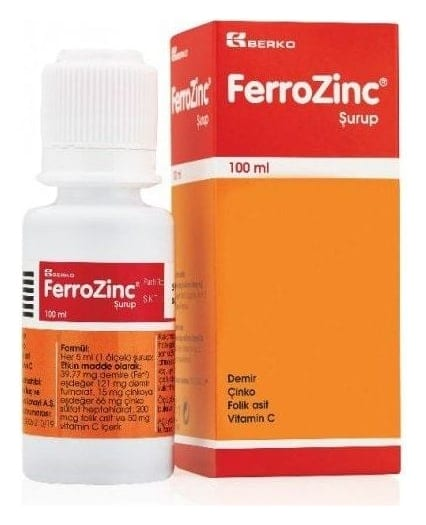

Ferrozinc Şurup, 100 ml

Ne için kullanılır
KT · Bölüm 1• FERROZİNC, opak beyaz renkte polietilen (PE) dış kapak, yarı şeffaf polietilen (PE) tıpa (plug) ve polipropilen (PP) pistondan (plunger) oluşan rezervuar kapak sistemi ile kapatılmış opak beyaz renkli yüksek yoğunluklu polietilen (HDPE) şişede, 5 ml’sinde 39,77 mg demire eşdeğer 121 mg demir fumarat, 15 mg çinkoya eşdeğer 66 mg çinko sülfat heptahidrat, 200 mikrogram (0,2 mg) folik asit ve 50 mg vitamin C
içeren ve ağız yolu ile kullanılan bir şuruptur. • Kullanım öncesi rezervuar kapak içerisinde yer alan toz karışımı, mineral karışımı içeren şişedeki şurup ile karıştırılır (bkz. son sayfa). • Her bir kutu 100 ml x 1 şişe ve 1 adet 5 ml’ lik pipet içermektedir. • FERROZİNC, demir eksikliği ile birlikte çinko eksikliği durumlarında kullanılır.